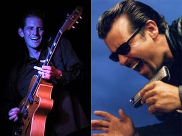

В начале ноября состоятся организованные blues.ru и компанией "Другая Музыка" российские гастроли калифорнийских музыкантов - гитариста Рика Холмстрома и гармониста Митча Кэшмара, которые будут играть с хаус-бендом клуба Мадди Уотерз (Осло), - бассистом Биллом Трояни и ударником Александром Петтерсеном.
Рик Холмстром (Rick Holmstrom) - один из главных гитаристов современного вест-коаст блюза, стиля, который активно сейчас развивается как в США, так и в Европе. Рик родился в 1965 году на Аляске, его отец был диск-жокеем на радио и приносил домой редкие блюзовые пластинки, благодаря чему Холмстром с детства познакомился с черной музыкой. Очень сильно на судьбу Холмстрома как музыканта повлиял переезд в 1985 году в Южную Калифорнию для продолжения учебы. Там он получил возможность каждый вечер крутиться в блюзовых клубах, в которых можно было услышать великолепных музыкантов, таких как Smokey Wilson, Junior Watson, William Clarke. В 80-е годы блюз в Калифорнии активно развивался, даже не имея при этом большой популярности, и несмотря на то, что национальном уровне был в некотором упадке.
Рик начал играть в своем гаражном ансамбле. Но первым серьезным появлением Холмстрома в большом блюзе была постоянная работа в группе Вильяма Кларка (William Clarke) с 1985 по 1988, где он первый год провел просто как второй ритм-гитарист. Работая с Кларком, Рик получил бесценный опыт, и за эти годы проявился его неординарный талант, музыка Рика стала представлять самостоятельный интерес. С начала 90-х Холмстром начал сотрудничать со многими ведущими музыкантами западного побережья, играя в различных проектах и участвуя как сессионный музыкант в записи многочисленных пластинок, число их на сегодня уже достигло 40. Наиболее заметными результатами были две совместные записи с гармонистом Джонни Дайером (Johnny Dyer), которые наполовину уже можно считать сольными альбомами Холмстрома. Широко известной пластинкой того периода также является диск Билли Боя Арнольда (Billy Boy Arnold), изданный на Alligator Records. Рик Холмстром, у которого к тому моменту образовался свой уникальный и узнаваемый гитарный стиль, практически на равных принимал участие в записях совместно с Джуниором Уотсоном, перед которым всегда преклонялся, и считал своим учителем.
Важным поворотом в музыкальной карьере Холмстрома был переход в группу Рода Пьяццы (Rod Piazza) - флагмана отрасли "The Migthy Flyers" в качестве основного гитариста. Это произошло после того, как группу покинул Алекс Шульц (Alex Schultz). Группа Рода Пьяццы на протяжении двух последних десятилетий - наиболее популярная и много выступающая в вест-коаст блюзе. В ней Холмстром играл целых 6 лет. За это время он также выпустил две сольные пластинки - Lookout и Gonna Get Wild, в которых выразил свое личное видение блюзовой формы.
Выход революционной пластинки "Hydraulic Groove" в 2002-м году совпал по времени с уходом из Майти Флаерс. Амбиции и возможности Холмстрома подтолкнули его к тому, чтобы заниматься только своим материалом в качестве солиста собственной группы. Пластинка "Hydraulic Groove" была чрезвычайно смелым экспериментом, ибо для записи большинства вещей вместе с живым звуком были использованы семплеры - чрезвычайно нетрадиционный для блюза инструмент. Несмотря на очевидную предсказуемую аллергию блюзовых пуристов, альбом был признан многими очень интересным, ибо был сделан с великолепным вкусом и пониманием тонкостей звука. Запись подобного альбома не означает для Холмстрома смену стилистики и музыкальных пристрастий, хотя ей он обозначил дерзкую тенденцию возможного расширения рамок блюзовой формы. Согласно слухам, на новом альбоме Холмстрома, который будет записан к концу года, будет также звучать что-то весьма блюзово-необычное, но уже совсем в другом направлении.
Стиль Холмстрома - попытка достичь выразительного эффекта скромными с виду средствами, а также бесконечно пристальное внимание к звуку. Тот или иной характерный гитарный звук - всегда основа в его песнях, на котором уже базируется весьма причудливая гитарная импровизация. Холмстром на концерах играет не громко, но достигает при этом появления подлинного чувства "драйва" у публики. Никогда не затягивает длинные нудные соло, которые порой бывают интересны только гитаристу. Его первые сольные альбомы вызывали удивление у критиков тем, что ни одна песня не длилась сильно дольше двух минут. И в этих песнях можно услышать весь диапазон настроений, выраженных музыкальными средствами, - от драйвово-грубой музыки до мягкой и легкой. Для гитаристов, интересующихся современным блюзом, Холмстром является одним из немногих современных идолов-классиков.
Гармонист и вокалист Митч Кэшмар (Mitch Kashmar) родился в Санта-Барбаре, Калифорния в 1960 году. Уже в 20 лет он сколотил свою собственную группу The Pontiax, которая стала известна по всей Калифорнии в очень короткий срок. После этого Митч с друзьями принимает решение перебраться в Лос-Анджелес, продолжив музыкальную карьеру. Альбом "100 Miles To Go" получил общенациональную известность, благодаря чему The Pontiax отправились с фестивальными турами по всей Америке, Канаде, в Европу и даже - в Австралию и Новую Зеландию. Группа значительно расширила диапазон стилей в своем репертуаре, исполняя чикагский блюз с губной гармоникой, нью-орлеанский фортепианный ритм-н-блюз, вест-коаст-джамп блюз и свинг, буги-вуги, луизианский свомп-фанк, техасский гитарный блюз и мейнстрим-джаз. Также группа была очень востребована как аккомпанирующая блюзовым звездам. За время своего существования они играли с Big Joe Turner, Eddie Cleanhead Vinson, Lowell Fulson, Roy Gaines, Jimmy Witherspoon, Charlie Musselwhite, Johnny Adams, John Lee Hooker, Pee Wee Crayton, Luther Tucker, Pinetop Perkins, William Clarke, Kim Wilson....
После распада The Pontiax Митч Кэшмар выступал как вольнонаемный блюзмен и солист, участвуя во многих проектах калифорнийского блюза. Но оставался при этом какое-то время в тени его приятелей, волей случая ставших более известными за пределами Калифорнии. Исправила положение его сольная пластинка Nickels & Dimes, которая вышла в конце 2004 года и получила признание по всей стране. На пластинке с Митчем записались замечательные музыканты. Это - Джуниор Уотсон на гитаре, Боб Уэлш на пианино, лучшая ритм-секция современного вест-коаст блюза - Ронни Джеймс на басу, Ричард Иннес на барабанах и другие.
Митч Кэшмар - многоплановый мастер губной гармоники, владеющий ей как в драйвовой электрической усиленной форме, так и с лирическим акустическим звуком. О его гармонике восторженно говорили Ким Вилсон, Вильям Кларк, Джеймс Харман, Джон Хэммонд, Джуниор Уотсон. Отдельно стоит отметить стиль игры Митча на хроматической гармонике. Митч был большим другом Вильяма Кларка, современного гуру хроматики, вместе они много играли, чему-то учились, развивались и, разумеется, влияли друг на друга. Вокал Митча Кэшмара показывает его как великолепного блюзового стилиста, подчеркивающего все нюансы блюзовой песни, чему можно было научиться, только имея столь богатый блюзовый опыт.
Билл Трояни (Bill Troiani) - опытный блюзовый бас-гитарист из Нью-Йорка, игравший долгие годы в группах у известных музыкантов - Эдди Киркланда, Попа Чабби, Тома Рассела. Последние несколько лет он живет в Осло и играет в множестве различных составов с талантливыми молодыми норвежскими блюзменами.
Александр Петтерсен (Alexander Pettersen) - молодой барабанщик, которому чуть больше 20 лет, начал играть блюз на ударных с 12 лет. Довольно скоро он стал регулярно выступать в клубе Muddy Waters в Осло, став позже постоянным членом хаус-бенда. На практике это означало возможность переиграть в том числе с огромным количеством американских блюзовых звезд, посещающих Норвегию, как и участие в 4-5 норвежских блюзовых составах. В свои молодые годы Алекс уже является великолепным опытным блюзовым баранщиком, не переставая учиться.
Трое музыкантов из группы уже знакомы нашим слушателям. Митч был хедлайнером великолепного шоу гармонистов Blues Harp Melt Down, которое приезжало в Москву в 2004 году. Алекс и Билл играли в России вместе с различными норвежскими блюзовыми звездами.
Гастроли Рика Холмстрома и Митча Кэшмара пройдут в 3-х российских городах - Москве, Владимире и Рязани, они станут частью большого тура по Норвегии, Швеции и России. На больших концертах в клубе "Курс", в Рязани и во Владимире открывающий сет сыграет российский гитарист Арсен Шомахов в составе с Биллом Трояни и Александром Петтерсеном.
Подробности о гастролях доступны на сайте Blues.Ru.
{kind=link}
{kind=link}